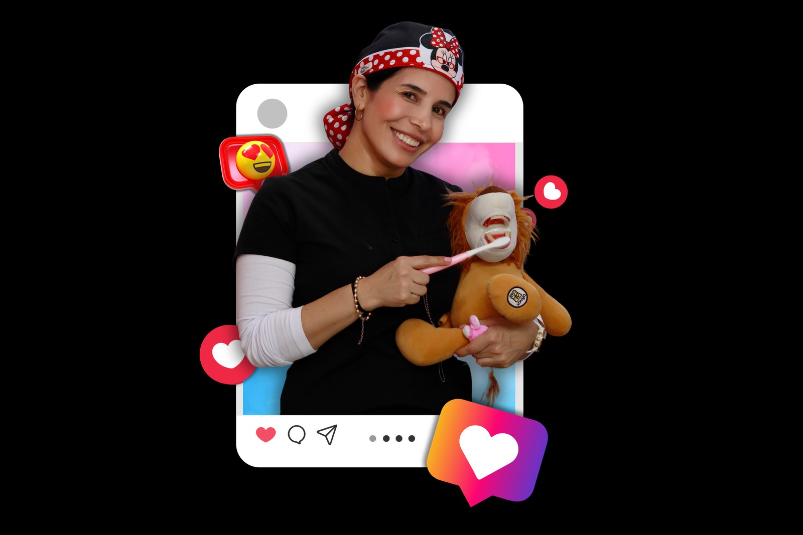
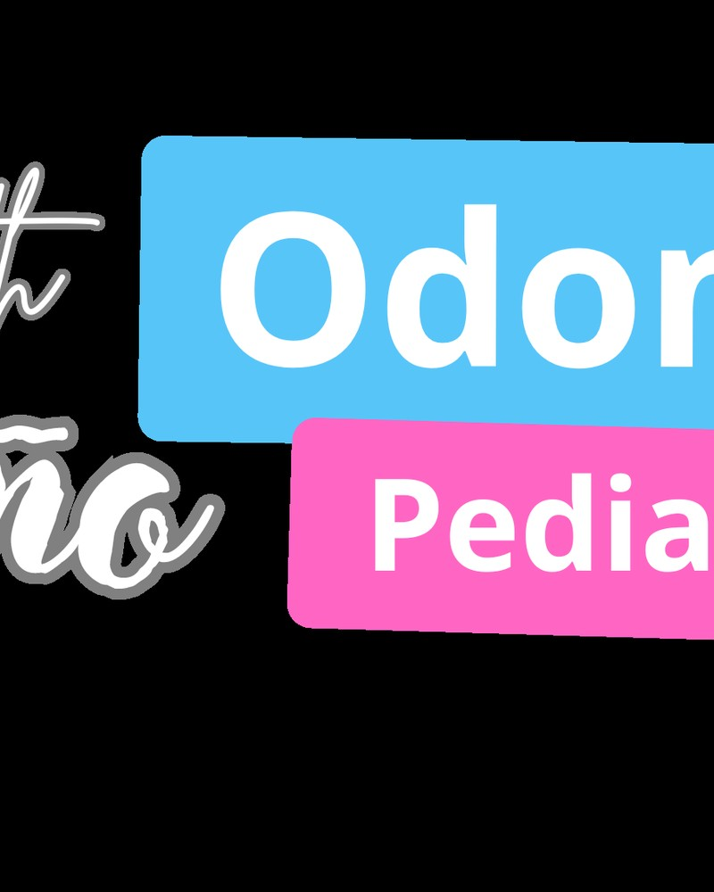

Clínica Dental Odontopediátrica · Medellín
Especialista en odontopediatría y ortopedia maxilar en niños de 0 a 12 años. Más de 9 años cuidando la salud bucal infantil con un enfoque amable, sin dolor y sin recuerdos traumáticos.


La Dra. Judith Niño es odontopediatra y aplica ortopedia maxilar para guiar el crecimiento facial de niños desde los primeros años. Su clínica en Medellín está pensada por completo para los más pequeños: ambiente amable, ritmo de atención adaptado y un trato que evita el miedo desde la primera visita.
El enfoque de Sonrikids combina prevención garantizada, corrección temprana y efectiva y cero dolor. La meta es que su hijo o hija crezca con una boca sana, sin recuerdos traumáticos y con la confianza de que ir al odontólogo es algo positivo.
Conozca más sobre la Dra. JudithAnestesia local cuando es necesaria, técnicas modernas y un trato amable. Cero recuerdos traumáticos.
+9 años de experiencia atendiendo solo niños. Conocemos cómo se comportan y cómo conectar con ellos.
Cuidamos la boca de su hijo a largo plazo: limpiezas, sellantes, flúor y educación en hábitos desde pequeños.
Nuestro enfoque
Todo está diseñado para que su hijo se sienta seguro: el ambiente, el lenguaje, los tiempos y las herramientas. Sin gritos, sin miedos, sin recuerdos malos.
Sabemos cómo conectar con niños que llegan con miedo. Avanzamos al ritmo de cada uno, sin presiones.
Anestesia local, técnicas modernas y un manejo del tiempo pensado para que no haya recuerdos traumáticos.
Ortopedia maxilar para guiar el crecimiento facial cuando aún es flexible. Resultados más efectivos a edad temprana.
Sellantes, flúor, limpiezas, control de caries y educación en hábitos. Lo que se previene hoy se evita mañana.
TODO LO QUE SU HIJO NECESITA EN UN SOLO LUGAR
Cuando hay dolor intenso al morder o sensibilidad extrema al frío y al calor, su hijo puede necesitar una endodoncia. Lo hacemos con tecnología avanzada y procedimiento prácticamente indoloro.
Tratamiento de encías para niños con sobrecrecimiento, dificultades en la erupción de dientes permanentes o sonrisa gingival. Procedimiento seguro y mínimamente invasivo.
Aparatos dentales diseñados para corregir alteraciones funcionales, guiar el crecimiento de los maxilares y prevenir tratamientos más complejos cuando el niño sea mayor.
Detectamos y tratamos las caries de forma segura, sin dolor y con técnicas que prefieren conservar el diente lo más natural posible. Cuidamos la salud dental de su hijo a largo plazo.
Estudios radiográficos seguros, rápidos y sin dolor con la mínima exposición posible para niños. Imagen digital de calidad para diagnósticos precisos.
Cada segundo cuenta. Atención inmediata y especializada para urgencias dentales en niños, en un entorno seguro y amigable. Si su hijo tuvo un golpe o un dolor súbito, escríbanos ya.
CONFIANZA, EXPERIENCIA Y ATENCIÓN ÚNICA
Sabemos manejar el miedo. Trabajamos al ritmo de cada niño y construimos la confianza poco a poco.
Protocolos clínicos, esterilización rigurosa y atención exclusiva para pacientes de 0 a 12 años.
Optimizamos cada consulta para que los niños no pasen horas en el consultorio. Más sonrisas, menos cansancio.
Cada niño es único. Adaptamos lenguaje, tiempos y técnicas a su edad, personalidad y necesidad clínica.
Clínica Dental Odontopediátrica
Medellín, Antioquia
(Dirección exacta confirmada al agendar)
Pida su valoración con la Dra. Judith Niño. Más de 9 años cuidando la salud bucal infantil en Medellín, con atención sin dolor y un trato amable que los niños recuerdan con cariño.